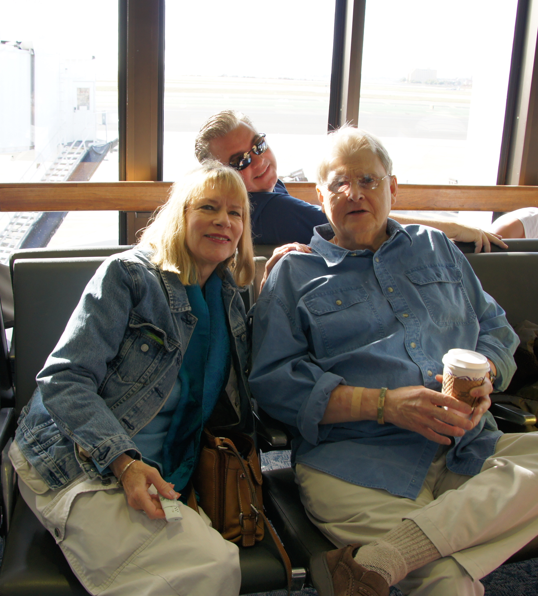

Ronald Bagby

Gramps (pictured right) on the way to a
vacation in Sedona, a trip during which I got to enjoy lots of
time with him
I am honored to have had my grandfather, Ronald Bagby (whom I call Gramps), in my life. He was a funny, kind, and all around great grandfather, and he was a special person to me in my life. His legacy will never be forgotten, and I am blessed and thankful to have known him.